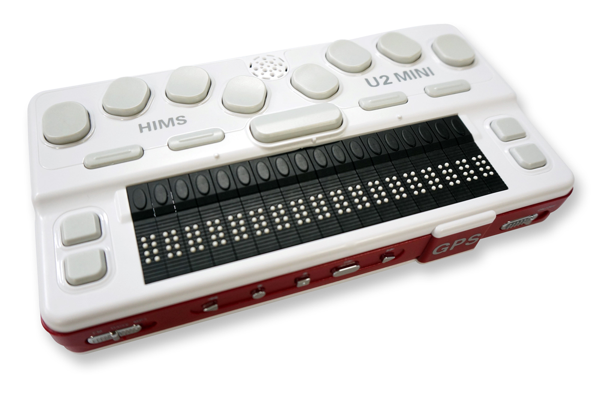

Accessibility - part 1
The last few weeks I spend a lot of time making websites more accessible for people with disabilities. I tested these websites with people that actually have disabilities. This gave a lot of insights which I could not predict without testing. Browsers have a lot of features that are specially made for people with a disability. The disabilities I'm talking about span from deafness till poor motor skills.
You might think only a small part of your users have a disability but that isn't true. Did you ever broke an arm? Then you also did have a disability. As we get older there will be more and more users with disabilities. Think about people with bad vision or decreased motor skills.
Deaf people
Before diving into the world of accessibility I thought that deaf people won't have a lot of problems on the web. It's all visual after all. After having an interview with a deaf person it seemed this was not entirely true. Deaf people read our language as a second language. It's harder to read than that it is for us. The grammar is different and sentences are shorter in sign language.
Reading in an other language is ofcourse harder then reading our own. Especially when using a lot of jargon. For jargon there is no sign. So when a interpreter tries to translate jargon to sign language they usually have to spell it. The deaf person then has to either understand it or it has to be explained by the interpreter. This all takes, as you may expect, a lot of time.
Video is a large part of the web. Most of them does not have any subtitles so they are hard to follow for deaf people. Now you might think about the automatically generated subtitles that YouTube uses. I did too. However these are very hard to follow and do often not reflect the actual content. The deaf person I talked to preferred no subtitles at all above generated subtitles. So subtitles have to be made by an actual person to be useful.
Conclusion
- Use simple and short sentences
- Avoid using jargon.
- Automatically generated subtitles are hard to follow, use men subtitles made instead.
Blind people
On the contrary, to deaf people blind poeple are depending on sound and touch. The web isn't really much sound and touch. Luckily there are tools to help blind people. Two of them are screen readers and braille displays.
Screen readers
Screen readers read the content on the screen out loud. They follow the HTML structure of a page and ignore almost all CSS
(Northup, 2017). Except for the
visibility: hidden; and
display: none; codes. As you might not expect
opacity: 0; is read by a screen readers. So it's important to test with an actual screen reader.
Some of the most used screen readers are (WebAIM, 2015) JAWS and NVDA. Those are not build-in an operating system. Other build-in screen readers are VoiceOver, that is delivered with Apple devices and Window-Eyes that is delivered with Windows computers.
Braille displays Braille displays are strokes of dots where the dots reflect the content on the screen. Braille displays are very expensive and are less used then screen readers. They also are getting less used by the year. According to Tom, one of the speakers I attended to, this is because of the increasing quality of health care. People are getting blind at an older age then before. And when people are older it's very hard to learn braille.

("Braille Sense U2 MINI", 2013)
Blindness and the web Standard the web is accessible for blind people. As I said before the structure plays a crucial part in the accessibility. There are many developers that only take into account "normal users". Not because they are evil but probably only because they don't know or there is no money for it. Here are some basic rules to make websites more accessible.
- Semantics: Use elements for what they are meant to do. For example:
<a href="index.html">Homepage</a>to create a link and not a<div>where you add link functionality to with JavaScript. - Poorly designed captcha's are impossible to solve for blind people. Take this into account when using one!
- Sound on websites override screen readers. So a video with autoplay makes it very hard to navigate trough a website.
- Add
alt=""tags to<img>elements even if they are not important enough (when using icons for example). If you don't add an alt tag it will read the filename out loud.
A nice side effect of writing semantic HTML is that it also good for SEO. Maybe this is a good argument to convince your manager to spend time making it semantic😬.
Conclusion
For deaf people it's important that sentences are short and simple. In many cases this is also the best for the average user. So it's a win-win situation when you take that into account. Automatically generated subtitles and jargon are hard to follow and you should avoid these.
Blind people are heavily depended on the structure of a website. Make HTML semantic and use as many browser features as possible. This creates a better experience for blind people (and search robots).
In the next part of this article I'm diving into color blindness and people with motor skill disorders.
Sources
- Braille Sense U2 MINI [Photograph]. (2013, November 8). Retrieved June 22, 2018, from http://globalaccessibilitynews.com/2013/11/08/hims-launches-next-generation-notetaker-braille-sense-u2-mini/
- Northup, J. (2017, August 28). Screen Readers and CSS: Are We Going Out of Style (and into Content)? Retrieved June 22, 2018, from https://webaim.org/blog/screen-readers-and-css/
- WebAIM. (2015, August 28). Screen Reader User Survey #6 Results. Retrieved June 22, 2018, from https://webaim.org/projects/screenreadersurvey6/#browsercombos